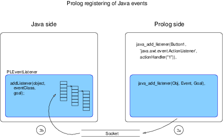
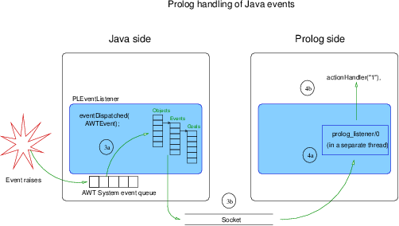

Prolog to Java interface
Author(s): Jesús Correas.
This module defines the Ciao Prolog to Java interface. This interface allows a Prolog program to start a Java process, create Java objects, invoke methods, set/get attributes (fields), and handle Java events.
This interface only works with JDK version 1.2 or higher.
Although the Java side interface is explained in Javadoc format (it is available at library/javall/javadoc/ in your Ciao installation), the general interface structure is detailed here.
Prolog to Java Interface Structure
This interface is made up of two parts: a Prolog part and a Java part, running in separate processes. The Prolog part receives requests from a Prolog program and sends them to the Java part through a socket. The Java part receives requests from the socket and performs the actions included in the requests.If an event is thrown in the Java side, an asynchronous message must be sent away to the Prolog side, in order to launch a Prolog goal to handle the event. This asynchronous communication is performed using a separate socket. The nature of this communication needs the use of threads both in Java and Prolog: to deal with the 'sequential program flow,' and other threads for event handling.
In both sides the threads are automatically created by the context of the objects we use. The user must be aware that different requests to the other side of the interface could run concurrently.
Prolog side of the Java interface
The Prolog side receives the actions to do in the Java side from the user program, and sends them to the Java process through the socket connection. When the action is done in the Java side, the result is returned to the user Prolog program, or the action fails if there is any problem in the Java side.Prolog data representation of Java elements is very simple in this interface. Java primitive types such as integers and characters are translated into the Prolog corresponding terms, and even some Java objects are translated in the same way (e. g. Java strings). Java objects are represented in Prolog as compound terms with a reference id to identify the corresponding Java object. Data conversion is made automatically when the interface is used, so the Prolog user programs do not have to deal with the complexity of these tasks.
Java side
The Java side of this layer is more complex than the Prolog side. The tasks this part has to deal with are the following:- Wait for requests from the Prolog side.
- Translate the Prolog terms received in the Prolog 'serialized' form to a more useful Java representation (see the Java interface documentation available at library/javall/javadoc/ in your Ciao installation for details regarding Java representation of Prolog terms).
- Interpret the requests received from the Prolog side, and execute them.
- Handle the set of objects created by or derived from the requests received from the prolog side.
- Handle the events raised in the Java side, and launch the listeners added in the prolog side.
- Handle the exceptions raised in the Java side, and send them to the Prolog side.
In the implementation of the Java side, two items must be carefully designed: the handling of Java objects, and the representation of prolog data structures. The last item is specially important because all the interactions between Prolog and Java are made using Prolog structures, an easy way to standardize the different data management in both sides. Even the requests themselves are encapsulated using Prolog structures. The overload of this encapsulation is not significant in terms of socket traffic, due to the optimal implementation of the prolog serialized term.
The java side must handle the objects created from the Prolog side dinamically, and these objects must be accessed as fast as possible from the set of objects. The Java API provides a powerful implementation of Hash tables that achieves all the requirements of our implementation.
On the other hand, the java representation of prolog terms is made using the inheritance of java classes. In the java side there exists a representation of a generic prolog term, implemented as an abstract class in java. Variables, atoms, compound terms, lists, and numeric terms are classes in the java side which inherit from the term class. Java objects can be seen also under the prolog representation as compound terms, where the single argument corresponds to the Hash key of the actual java object in the Hash table referred to before. This behaviour makes the handling of mixed java and prolog elements easy. Prolog goals are represented in the java side as objects which contain a prolog compound term with the term representing the goal. This case will be seen more in depth in next chapter, where the java to prolog interface is explained.
Java event handling from Prolog
Java event handling is based on a delegation model since version 1.1.x. This approach to event handling is very powerful and elegant, but a user program cannot handle all the events that can arise on a given object: for each kind of event, a listener must be implemented and added specifically. However, the Java 2 API includes a special listener (AWTEventListener) that can manage the internal java event queue.The prolog to java interface has been designed to emulate the java event handler, and is also based on event objects and listeners. The prolog to java interface implements its own event manager, to handle those events that have prolog listeners associated to the object that raises the event. From the prolog side can be added listeners to objects for specific events. The java side includes a list of goals to launch from the object and event type.
Due to the events nature, the event handler must work in a separate thread to manage the events asynchronously. The java side has its own mechanisms to work this way. The prolog side must be implemented specially for event handling using threads. The communication between java and prolog is also asynchronous, and an additional socket stream is used to avoid interferences with the main socket stream. The event stream will work in this implementation only in one way: from java to prolog. If an event handler needs to send back requests to java, it will use the main socket stream, just like the requests sent directly from a prolog program.
The internal process of register a Prolog event handler to a Java event is shown in the next figure:

When an event raises, the Prolog to Java interface has to send to the Prolog user program the goal to evaluate. Graphically, the complete process takes the tasks involved in the following figure:

Java exception handling from Prolog
Java exception handling is very similar to the peer prolog handling: it includes some specific statements to trap exceptions from user code. In the java side, the exceptions can be originated from an incorrect request, or can be originated in the code called from the request. Both exception types will be sent to prolog using the main socket stream, allowing the prolog program manage the exception. However, the first kind of exceptions are prefixed, so the user program can distinguish them from the second type of exceptions.In order to handle exceptions properly using the prolog to java and java to prolog interfaces simultaneously, in both sides of the interface those exceptions coming from their own side will be filtered: this avoids an endless loop of exceptions bouncing from one side to another.
Usage and interface
- Library usage:
:- use_module(library(javart)). - Exports:
- Predicates:
java_start/0, java_start/1, java_start/2, java_stop/0, java_connect/2, java_disconnect/0, java_use_module/1, java_create_object/2, java_delete_object/1, java_invoke_method/2, java_get_value/2, java_set_value/2, java_add_listener/3, java_remove_listener/3. - Regular Types:
machine_name/1, java_constructor/1, java_object/1, java_event/1, prolog_goal/1, java_field/1, java_method/1.
- Predicates:
- Other modules used:
- System library modules:
concurrency/concurrency, iso_byte_char, lists, read, write, javall/javasock, system.
- System library modules:
Documentation on exports
Usage:
- Description: Starts the Java server on the local machine, connects to it, and starts the event handling thread.
Usage: java_start(Classpath)
- Description: Starts the Java server on the local machine, connects to it, and starts the event handling thread. The Java server is started using the classpath received as argument.
- Call and exit should be compatible with:
(basic_props:string/1)Classpath is a string (a list of character codes). - The following properties should hold at call time:
(term_typing:nonvar/1)Classpath is currently a term which is not a free variable.
Usage: java_start(Machine_name,Classpath)
- Description: Starts the Java server in machine_name (using rsh!), connects to it, and starts the event handling thread. The Java server is started using the Classpath received as argument.
- Call and exit should be compatible with:
(javart:machine_name/1)Machine_name is the network name of a machine.
(basic_props:string/1)Classpath is a string (a list of character codes). - The following properties should hold at call time:
(term_typing:nonvar/1)Machine_name is currently a term which is not a free variable.
(term_typing:nonvar/1)Classpath is currently a term which is not a free variable.
Usage:
- Description: Stops the interface terminating the threads that handle the socket connection, and finishing the Java interface server if it was started using java_start/n.
Usage: java_connect(Machine_name,Port_number)
- Description: Connects to an existing Java interface server running in Machine_name and listening at port port_number. To connect to a Java server located in the local machine, use 'localhost' as machine_name.
- Call and exit should be compatible with:
(javart:machine_name/1)Machine_name is the network name of a machine.
(basic_props:int/1)Port_number is an integer. - The following properties should hold at call time:
(term_typing:nonvar/1)Machine_name is currently a term which is not a free variable.
(term_typing:nonvar/1)Port_number is currently a term which is not a free variable.
Usage:
- Description: Closes the connection with the java process, terminating the threads that handle the connection to Java. This predicate does not terminate the Java process (this is the disconnection procedure for Java servers not started from Prolog). This predicate should be used when the communication is established with java_connect/2.
Usage: java_constructor(X)
- Description: X is a java constructor (structure with functor as constructor full name, and arguments as constructor arguments).
Usage: java_object(X)
- Description: X is a java object (a structure with functor '$java_object', and argument an integer given by the java side).
Usage: java_event(X)
- Description: X is a java event represented as an atom with the full event constructor name (e.g., 'java.awt.event.ActionListener').
Usage: prolog_goal(X)
- Description: X is a prolog predicate. Prolog term that represents the goal that must be invoked when the event raises on the object. The predicate arguments can be java objects, or even the result of java methods. These java objects will be evaluated when the event raises (instead of when the listener is added). The arguments that represent java objects must be instantiated to already created objects. The variables will be kept uninstantiated when the event raises and the predicate is called.
Usage: java_field(X)
- Description: X is a java field (structure on which the functor name is the field name, and the single argument is the field value).
Usage: java_use_module(Module)
- Description: Loads a module and makes it available from Java.
- Call and exit should be compatible with:
(basic_props:term/1)Module is any term. - The following properties should hold at call time:
(term_typing:nonvar/1)Module is currently a term which is not a free variable.
Usage:
- Description: New java object creation. The constructor must be a compound term as defined by its type, with the full class name as functor (e.g., 'java.lang.String'), and the parameters passed to the constructor as arguments of the structure.
- Call and exit should be compatible with:
(javart:java_constructor/1)Arg1 is a java constructor (structure with functor as constructor full name, and arguments as constructor arguments).
(javart:java_object/1)Arg2 is a java object (a structure with functor '$java_object', and argument an integer given by the java side). - The following properties should hold at call time:
(javart:java_constructor/1)Arg1 is a java constructor (structure with functor as constructor full name, and arguments as constructor arguments).
(term_typing:var/1)Arg2 is a free variable. - The following properties should hold upon exit:
(javart:java_object/1)Arg2 is a java object (a structure with functor '$java_object', and argument an integer given by the java side).
Usage:
- Description: Java object deletion. It removes the object given as argument from the Java object table.
- Call and exit should be compatible with:
(javart:java_object/1)Arg1 is a java object (a structure with functor '$java_object', and argument an integer given by the java side). - The following properties should hold at call time:
(javart:java_object/1)Arg1 is a java object (a structure with functor '$java_object', and argument an integer given by the java side).
Usage:
- Description: Invokes a java method on an object. Given a Java object reference, invokes the method represented with the second argument.
- Call and exit should be compatible with:
(javart:java_object/1)Arg1 is a java object (a structure with functor '$java_object', and argument an integer given by the java side).
(javart:java_method/1)Arg2 is a java method (structure with functor as method name, and arguments as method ones, plus a result argument. This result argument is unified with the atom 'Yes' if the java method returns void). - The following properties should hold at call time:
(javart:java_object/1)Arg1 is a java object (a structure with functor '$java_object', and argument an integer given by the java side).
(javart:java_method/1)Arg2 is a java method (structure with functor as method name, and arguments as method ones, plus a result argument. This result argument is unified with the atom 'Yes' if the java method returns void).
Usage: java_method(X)
- Description: X is a java method (structure with functor as method name, and arguments as method ones, plus a result argument. This result argument is unified with the atom 'Yes' if the java method returns void).
Usage:
- Description: Gets the value of a field. Given a Java object as first argument, it instantiates the variable given as second argument. This field must be uninstantiated in the java_field functor, or this predicate will fail.
- Call and exit should be compatible with:
(javart:java_object/1)Arg1 is a java object (a structure with functor '$java_object', and argument an integer given by the java side).
(javart:java_field/1)Arg2 is a java field (structure on which the functor name is the field name, and the single argument is the field value). - The following properties should hold at call time:
(javart:java_object/1)Arg1 is a java object (a structure with functor '$java_object', and argument an integer given by the java side).
(javart:java_field/1)Arg2 is a java field (structure on which the functor name is the field name, and the single argument is the field value).
Usage:
- Description: Sets the value of a Java object field. Given a Java object reference, it assigns the value included in the java_field compound term. The field value in the java_field structure must be instantiated.
- Call and exit should be compatible with:
(javart:java_object/1)Arg1 is a java object (a structure with functor '$java_object', and argument an integer given by the java side).
(javart:java_field/1)Arg2 is a java field (structure on which the functor name is the field name, and the single argument is the field value). - The following properties should hold at call time:
(javart:java_object/1)Arg1 is a java object (a structure with functor '$java_object', and argument an integer given by the java side).
(javart:java_field/1)Arg2 is a java field (structure on which the functor name is the field name, and the single argument is the field value).
Meta-predicate with arguments: java_add_listener(?,?,goal).
Usage:
- Description: Adds a listener to an event on an object. Given a Java object reference, it registers the goal received as third argument to be launched when the Java event raises.
- Call and exit should be compatible with:
(javart:java_object/1)Arg1 is a java object (a structure with functor '$java_object', and argument an integer given by the java side).
(javart:java_event/1)Arg2 is a java event represented as an atom with the full event constructor name (e.g., 'java.awt.event.ActionListener').
(javart:prolog_goal/1)Arg3 is a prolog predicate. Prolog term that represents the goal that must be invoked when the event raises on the object. The predicate arguments can be java objects, or even the result of java methods. These java objects will be evaluated when the event raises (instead of when the listener is added). The arguments that represent java objects must be instantiated to already created objects. The variables will be kept uninstantiated when the event raises and the predicate is called. - The following properties should hold at call time:
(javart:java_object/1)Arg1 is a java object (a structure with functor '$java_object', and argument an integer given by the java side).
(javart:java_event/1)Arg2 is a java event represented as an atom with the full event constructor name (e.g., 'java.awt.event.ActionListener').
(javart:prolog_goal/1)Arg3 is a prolog predicate. Prolog term that represents the goal that must be invoked when the event raises on the object. The predicate arguments can be java objects, or even the result of java methods. These java objects will be evaluated when the event raises (instead of when the listener is added). The arguments that represent java objects must be instantiated to already created objects. The variables will be kept uninstantiated when the event raises and the predicate is called.
Usage:
- Description: It removes a listener from an object event queue. Given a Java object reference, goal registered for the given event is removed.
- Call and exit should be compatible with:
(javart:java_object/1)Arg1 is a java object (a structure with functor '$java_object', and argument an integer given by the java side).
(javart:java_event/1)Arg2 is a java event represented as an atom with the full event constructor name (e.g., 'java.awt.event.ActionListener').
(javart:prolog_goal/1)Arg3 is a prolog predicate. Prolog term that represents the goal that must be invoked when the event raises on the object. The predicate arguments can be java objects, or even the result of java methods. These java objects will be evaluated when the event raises (instead of when the listener is added). The arguments that represent java objects must be instantiated to already created objects. The variables will be kept uninstantiated when the event raises and the predicate is called. - The following properties should hold at call time:
(javart:java_object/1)Arg1 is a java object (a structure with functor '$java_object', and argument an integer given by the java side).
(javart:java_event/1)Arg2 is a java event represented as an atom with the full event constructor name (e.g., 'java.awt.event.ActionListener').
(javart:prolog_goal/1)Arg3 is a prolog predicate. Prolog term that represents the goal that must be invoked when the event raises on the object. The predicate arguments can be java objects, or even the result of java methods. These java objects will be evaluated when the event raises (instead of when the listener is added). The arguments that represent java objects must be instantiated to already created objects. The variables will be kept uninstantiated when the event raises and the predicate is called.